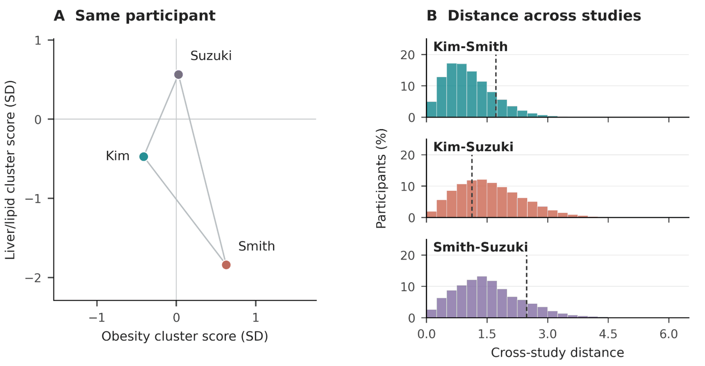
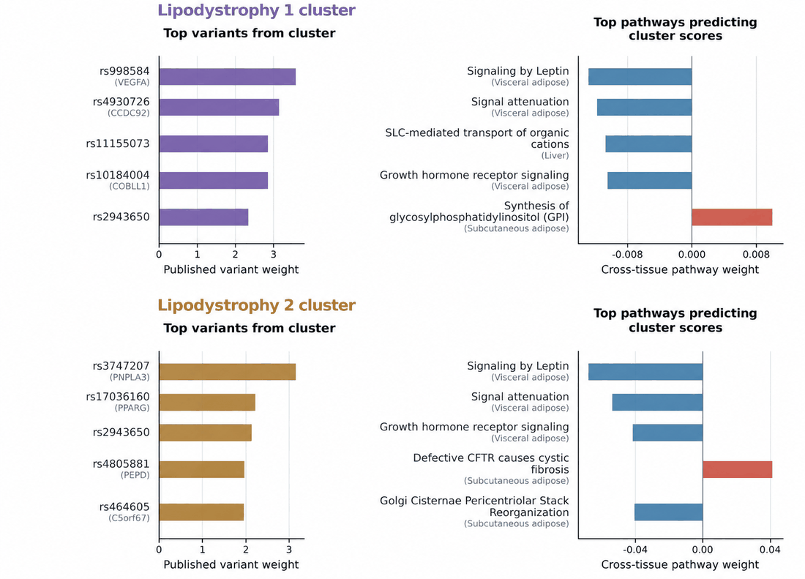
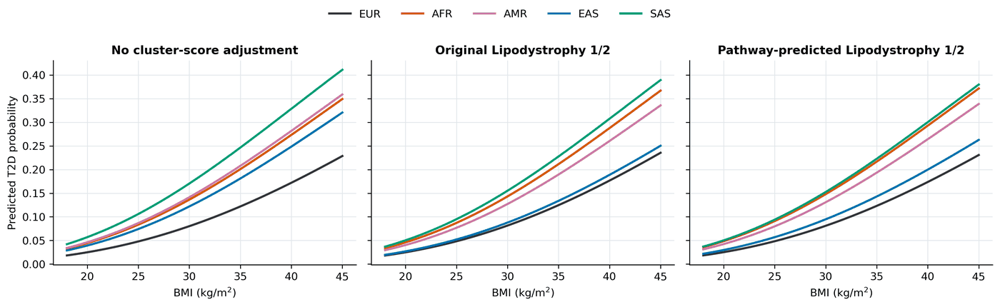

Pathway-Independent Genetic Signals in Type 2 Diabetes Clusters
Genetic clustering of type 2 diabetes (T2D) groups risk variants by how they relate to metabolic traits, and the resulting cluster scores are often read as distinct disease mechanisms. In this project I ask how far those clusters can be trusted, and whether biological pathways give a more stable way to describe the same genetic signal. All analyses use data from the All of Us Research Program.
Background
The published cluster definitions (Kim et al. 2023, Smith et al. 2024, Suzuki et al. 2024) depend on the population, the traits used for clustering and the clustering method. The labels also have to be interpreted after the fact. Pathway polygenic scores take the opposite route: genes are mapped to annotated pathways ahead of time, so the features stay fixed across studies and can be compared across tissues and diseases.
Approach
I computed the published cluster scores in All of Us, and built tissue-specific Reactome pathway scores from GTEx v8 expression prediction models. I then used ridge regression to reconstruct each cluster score from the pathway scores. This gives three versions of the same genetic information (original cluster scores, pathway scores, and pathway-reconstructed cluster scores) that I compare throughout.
What I have found so far
First, the clusters are less stable than their labels suggest. The same participant can land in quite different places depending on which study's definition is used (Figure 1). Within a single framework, simply removing adiposity traits from the clustering inputs moved 38.5% of Lipodystrophy 1 participants to another cluster, and 17.5% of participants overall.

Second, pathways help explain what two similarly named clusters have in common. Lipodystrophy 1 and 2 are driven by different leading variants, but three of their top five pathways are the same: leptin signaling, signal attenuation and growth hormone receptor signaling, all in visceral adipose tissue (Figure 2).

Third, the pathway-reconstructed scores keep at least some of the clinical signal. Smith et al. showed that adjusting for the lipodystrophy scores narrows the difference in T2D risk between East Asian and European ancestry at the same BMI, and the reconstructed scores reproduce this (Figure 3). Neither the cluster scores nor the pathway scores improved prediction of retinopathy or neuropathy over a clinical baseline. For coronary artery disease, the original and reconstructed scores behaved differently.

Open questions
These results are preliminary and not yet peer reviewed. Two things I would most like to understand better are how much the pathway associations depend on a few individual genes, and what the different coronary artery disease pattern reflects.
References
- Kim H. et al. High-throughput genetic clustering of type 2 diabetes loci reveals heterogeneous mechanistic pathways of metabolic disease. Diabetologia, 2023.
- Smith K. et al. Multi-ancestry polygenic mechanisms of type 2 diabetes. Nature Medicine, 2024.
- Suzuki K. et al. Genetic drivers of heterogeneity in type 2 diabetes pathophysiology. Nature, 2024.